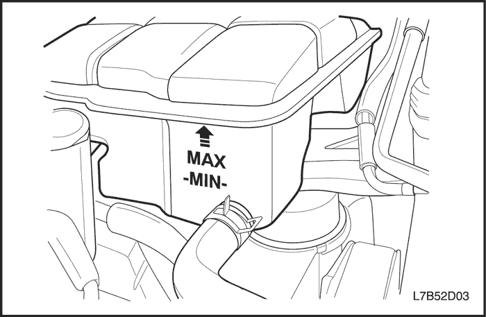
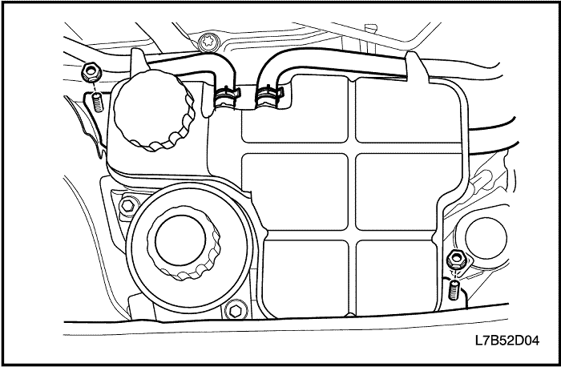

SECCIÓN 1D2
REFRIGERACIÓN DEL MOTOR - 2.0 DIESEL
ESPECIFICACIONES
| Aplicación | Descripción | Unidad | Estándar |
| Sistema de refrigeración | Tipo de refrigeración | - | PRESURIZADA |
| Refrigerante | Capacidad de refrigerante | L (qt) | 9 (9.51) |
| Termostato | Tipo | - | Bola de cera |
| Temperatura (apertura inicial) | °C (°F) | 80 ± 2 (176 ± 35.6) |
| Temperatura (apertura completa) | °C (°F) | 95 (203) |
| Temperatura (cierre completo) | °C (°F) | 75 (167) o más |
| Carrera (cierre completo) | mm (in) | 8 (0,315) o más |
| Ventilador de refrigeración | Tipo | - | TIPO DE FLUJO AXIAL |
| Número de aspas (principal/auxiliar) | EA | 7 / 9 |
| Diámetro del ventilador de refrigeración (principal/auxiliar) | mm (in) | 408 (13.39) / 291 (11.46) |
| Temperatura de activación a baja velocidad | °C (°F) | 91 (195.8) |
| Temperatura de desactivación a baja velocidad | °C (°F) | 89 (192.2) |
| Temperatura de activación a media velocidad | °C (°F) | 94 (201.2) |
| Temperatura de desactivación a media velocidad | °C (°F) | 92 (197.6) |
| Temperatura de activación a alta velocidad | °C (°F) | 97 (192.2) |
| Temperatura de desactivación a alta velocidad | °C (°F) | 95 (203) |
| Vaso de compensación | Presión de apertura de la válvula de presión | kPa/psi | 140 (20.3) |
| Presión de apertura de la válvula de vacío | kPa/psi | 10 (1.5) |
| Bomba de agua | Tipo | - | CENTRÍFUGA |
| Diámetro del rodete | mm (in) | 85 (3.35) |
| Número de aspas del rodete | EA | 7 |
| Radiador | Tipo | - | Flujo cruzado |
| Anchura del núcleo | mm (in) | 607 (23.90) |
| Altura del núcleo | mm (in) | 414 (16.30) |
| Profundidad del núcleo | mm (in) | 27 (1.06) |
Especificaciones de apriete de la sujeción
| Aplicación | N•m | Árbol de transmisión izquierdo | Articulación |
| Tornillo de fijación del condensador del A/A | 9 | - | 80 |
| Tornillo del conjunto del ventilador de refrigeración principal | 4 | - | 35 |
| Tornillo del conjunto del ventilador de refrigeración auxiliar | 4 | - | 35 |
| Tornillo de fijación del soporte superior del radiador | 14 | 10.3 | - |
| Tornillo y tuerca de fijación del vaso de compensación | 5 | - | 44 |
| Tornillos de la caja del termostato | 23 | 17 | - |
| Tornillo de fijación de la tubería y el refrigerador del aceite de la caja de cambios | 10 | - | 88.5 |
| Tornillo de fijación de la tubería de agua (M6) | 9 | - | 79.7 |
| Tornillo de fijación de la tubería de agua (M8) | 20 | 14.8 | - |
| Tornillo de apriete de la bomba de agua | 11 | - | 97.4 |
| Tornillo de retención del refrigerador de aire de carga | 8.5 | - | 75.2 |
| Tornillo de fijación del tubo de combustible a la rampa de inyectores común | 10 | - | 88.5 |
| Tuerca del piñón de la bomba de inyección | 70 | 51.6 | - |
| Tornillo de la polea loca de la correa de distribución | 52 | 38.4 | - |
| Tornillo de la tapa trasera de la correa de distribución | 11 | - | 97.4 |
LOCALIZACIÓN DE COMPONENTES
Radiador y ventilador
- Motor del ventilador de refrigeración principal
- Radiador
- Refrigerador del aire de carga
- Condensador
- Motor del ventilador de refrigeración auxiliar
Bomba de agua y termostato
- Bomba de agua
- Junta de bomba de agua
- Caja del termostato
- Junta del termostato
- Termostato
- Sensor T-MAP
- Sensor de temperatura del refrigerante
Vía de refrigeración
- Vaso de compensación
- Tapón del vaso de compensación
- Manguito de entrada del radiador
- CRFM (módulo de ventilador de radiador de refrigeración)
- Soporte superior de radiador
- Soporte inferior de radiador
- Tubos de refrigeración de la caja de cambios
- Manguito del conjunto de salida del radiador
- Tubo del agua
- Manguito del vaso de compensación
- Manguito de entrada del vaso de compensación
- Tubo del agua
- Manguito de salida del refrigerador de EGR
- Manguito de entrada del refrigerador de EGR
- Refrigerador de EGR
DIAGNÓSTICO
Comprobación del termostato
- Desmonte el termostato del vehículo. Consulte el apartado "Termostato" de esta sección.
- Asegúrese de que el muelle de válvula esté apretado cuando el termostato esté completamente cerrado. Si el muelle está flojo, sustituya el termostato.
- Introduzca el termostato y un termómetro dentro de un recipiente con una mezcla al 50% de agua y etilenglicol. No deje que el termostato ni el termómetro descansen sobre el fondo del recipiente, ya que la desigual distribución del calor en el fondo podría dar lugar a unas mediciones de temperatura inexactas.
- Caliente el recipiente con un mechero.
- Utilice el termómetro para medir la temperatura de la solución cuando esté caliente.
- El termostato debe empezar a abrirse a los 87°C (189°F) y debe estar completamente abierto a los 102°C (216°F). Si no se abre a estas temperaturas, sustituya el termostato.
El motor se calienta en exceso
| Comprobaciones | Medida |
| Compruebe si se pierde refrigerante. | Añada refrigerante. |
| Compruebe si la solución del refrigerante es débil. | Confirme que la solución del refrigerante sea una mezcla al 50% de agua y etilenglicol. |
| Compruebe si hay suciedad, hojas o insectos en la parte delantera del radiador. | Limpie la parte delantera del radiador. |
| Compruebe si hay fugas en los manguitos, la bomba de refrigerante, el calefactor, la caja del termostato, el radiador, los tapones del panal del radiador o en la junta de la culata. | Sustituya cualquier componente dañado. |
| Compruebe si el termostato está defectuoso. | Sustituya un termostato dañado. |
| Compruebe si se da un reglaje del encendido retardado. | Efectúe un diagnóstico por códigos del ECM. Confirme la integridad de la correa de distribución. |
| Compruebe si el ventilador eléctrico del sistema de refrigeración funciona correctamente. | Sustituya el ventilador eléctrico. |
| Compruebe si los manguitos del radiador están obstruidos o deteriorados. | Sustituya cualquier manguito del radiador dañado. |
| Compruebe si funciona debidamente la bomba de agua. | Sustituya la bomba de agua defectuosa. |
| Compruebe si el tapón del vaso de compensación está defectuoso. | Sustituya el tapón del vaso de compensación defectuoso. |
| Compruebe si hay grietas u obstrucciones en la culata o en el bloque del motor. | Repare la culata o el bloque del motor dañado. |
Pérdida de refrigerante
| Comprobaciones | Medida |
| Compruebe si hay alguna fuga en el radiador. | Sustituya el radiador dañado. |
| Compruebe la presencia de fugas en los puntos siguientes: - Vaso de compensación.
- Manguito.
| Sustituya las piezas siguientes, según sea necesario: - Vaso de compensación.
- Manguito.
|
| Compruebe si los manguitos del radiador, manguitos del calefactor y sus conexiones están flojos o dañados. | Afiance la conexión de los manguitos. Sustituya los manguitos o las abrazaderas. |
| Compruebe si hay fugas en la junta estanca de la bomba de refrigerante. | Sustituya la junta estanca de la bomba de refrigerante. |
| Compruebe si hay fugas en la junta de la bomba de refrigerante. | Sustituya la junta de la bomba de refrigerante. |
| Compruebe si el par de apriete de la culata es correcto. | Apriete los tornillos de acuerdo con las especificaciones. Sustituya la junta de la culata, si fuera necesario. |
| Compruebe la presencia de fugas en los puntos siguientes: - Colector de admisión.
- Junta de la culata
- Tapón del bloque de cilindros
- Núcleo del calefactor
- Tapón de drenaje del radiador
| Repare o sustituya cualquier componente que sea necesario para corregir la fuga. |
El motor no alcanza la temperatura de funcionamiento normal o sale aire frío del calefactor
| Comprobaciones | Medida |
| Compruebe si el termostato se ha quedado agarrotado en posición abierta o si es un tipo incorrecto de termostato. | Monte un termostato nuevo del tipo y rango térmico correctos. |
| Compruebe el nivel del refrigerante para determinar si está por debajo de la marca de MIN en el vaso de compensación. | Añada suficiente refrigerante para elevar el nivel del líquido hasta la marca especificada en el vaso de compensación. |
MANTENIMIENTO Y REPARACIÓN
SERVICIO EN VEHÍCULO


Purgar y llenar el sistema de refrigeración
Precaución: No desmonte el tapón del vaso de compensación mientras estén calientes el motor y el radiador. Se puede producir una emisión violenta de líquido caliente y vapor debido a la alta presión.
- Coloque un recipiente debajo del vehículo para recoger el refrigerante que se vaya a extraer.
- Quite el tapón del vaso de compensación.
- Quite el tapón de drenaje.
Precaución: Deseche el refrigerante usado en un depósito de recogida de este tipo de líquido, el cual se recogerá junto con el aceite usado para su eliminación. No vierta nunca el refrigerante usado por el desagüe.
- Recoja el líquido que salga en una bandeja de drenaje.
- Elimine todos los lodos y suciedad del interior del vaso de compensación. Consulte el apartado "Vaso de compensación" de esta sección.
- Ponga el tapón de drenaje.
- Añada agua limpia al vaso de compensación.
- Llene el vaso lentamente de manera que el manguito superior del vaso quede por encima de la línea del agua. Esto permite la salida del aire que haya en el interior del sistema de refrigeración.
- Ponga el motor en marcha.
- Tenga en marcha el motor hasta que se abra el termostato. Se puede saber si el termostato está abierto tocando los manguitos del radiador para ver si están calientes.

- Pare el motor.
- Repita los pasos 1 a 9 hasta que el agua que salga esté limpia y no contenga ni refrigerante ni óxido.
Aviso: No utilice nunca una mezcla de anticongelante con una concentración mayor del 60% de éste y 40% de agua. El punto de congelación de la solución aumenta por encima de esta concentración.
- Rellene el sistema de refrigeración mediante el vaso de compensación con una mezcla de Dexcool y agua. La mezcla debe tener, al menos, un 50% de anticongelante, pero nunca más de un 60% del mismo.
- Llene el vaso de compensación hasta la marca de MAX en el exterior del vaso.
Vaso de compensación
Procedimiento de desmontaje
Precaución: Para evitar lesiones personales, no desmonte el tapón del vaso de compensación mientras el motor y el radiador estén calientes, ya que el calor hace que el sistema permanezca sometido a presión. Se puede producir una emisión violenta de líquido caliente y vapor debido a la presión.
- Extraiga refrigerante del motor hasta que su nivel esté por debajo del vaso de compensación.
- Afloje la abrazadera del manguito de retorno y desconecte dicho manguito de la parte superior del vaso de compensación.
- Afloje la abrazadera del manguito de alimentación y desconecte dicho manguito de la parte inferior del vaso de compensación.
- Quite las tuercas fijación del vaso de compensación.

- Desmonte el vaso de compensación del soporte de fijación.
- Limpie el interior y el exterior del vaso de compensación y el tapón del mismo con agua y jabón.
- Aclare a fondo el vaso de compensación junto con su tapón.
procedimiento de montaje
- Monte el vaso de compensación en el soporte de fijación.
- Asegure las tuercas de fijación del vaso de compensación.
Apretar
Apriete las tuercas de fijación del vaso de compensación hasta 5 N•m (44 lb-pulg.).
- Conecte el manguito de retorno y el manguito del cuerpo del acelerador a la parte superior del vaso de compensación.
- Conecte el manguito de alimentación a la parte inferior del vaso de compensación.
- Sujete el manguito de retorno, el manguito del cuerpo del acelerador y el manguito de alimentación al vaso de compensación con las abrazaderas de los manguitos.
- Llene el vaso de compensación de refrigerante hasta la arista central o hasta la marca MAX.
Ventilador eléctrico principal del sistema de refrigeración
Procedimiento de desmontaje
- Desconecte el cable negativo de la batería.
- Retire la tapa embellecedora. Consulte la sección 1B, Mecánica del motor - 2.0 Diesel.
- Retire los manguitos del sistema de aire de carga. Consulte la sección 1B, Mecánica del motor - 2.0 Diesel.
- Desmonte la bandeja y la batería. Consulte la Sección 1E2, Sistema eléctrico del motor - 2.0 Diesel.
- Desmonte la caja de fusibles de la bujía de precalentamiento. Consulte la Sección 1E2, Sistema eléctrico del motor - 2.0 Diesel.
- Desenchufe el conector del ventilador principal de refrigeración.
- Desmonte el ventilador de refrigeración principal hacia arriba desde el radiador.
procedimiento de montaje
Precaución: Si el conjunto del ventilador se dobla o sufre cualquier tipo de daño, no intente reparar o volver a utilizar la pieza dañada. Un conjunto de ventilador doblado o dañado debe ser sustituido siempre por otro nuevo. Es esencial mantener los conjuntos de los ventiladores perfectamente equilibrados. Un conjunto de ventilador que no esté correctamente equilibrado puede averiarse y desprenderse estando en funcionamiento, lo que supone un gran peligro. No puede garantizarse un equilibrio correcto en un conjunto de ventilador que esté doblado o dañado.
- Monte el ventilador de refrigeración principal en el radiador.
- Enchufe el conector del ventilador principal de refrigeración.
Apretar
Apriete los tornillos de retención del ventilador de refrigeración principal hasta 4 N•m (35 lb-pulg.).
Ventilador eléctrico auxiliar del sistema de refrigeración
Procedimiento de desmontaje
Precaución: Para evitar que se produzcan daños personales, no desmonte el radiador mientras el motor y el radiador estén calientes.
- Retire el cable negativo de la batería.
- Desmonte la tapa superior de la rejilla del radiador.
- Quite la tapa inferior de la rejilla del radiador.
- Desenchufe el conector del ventilador auxiliar de refrigeración.
- Desmonte el ventilador de refrigeración auxiliar hacia abajo.
procedimiento de montaje
Precaución: Si el conjunto del ventilador se dobla o sufre cualquier tipo de daño, no intente reparar o volver a utilizar la pieza dañada. Un conjunto de ventilador doblado o dañado debe ser sustituido siempre por otro nuevo. Es esencial mantener los conjuntos de los ventiladores perfectamente equilibrados. Un conjunto de ventilador que no esté correctamente equilibrado puede averiarse y desprenderse estando en funcionamiento, lo que supone un gran peligro. No puede garantizarse un equilibrio correcto en un conjunto de ventilador que esté doblado o dañado.
- Monte el ventilador de refrigeración auxiliar.
- Coloque las tapas superior e inferior de la rejilla del radiador.
Apretar
Apriete los tornillos de apriete del ventilador de refrigeración auxiliar hasta 4 N•m (35 lb-pulg.).
Radiador
Procedimiento de desmontaje
Precaución: Para evitar que se produzcan daños personales, no desmonte el radiador mientras el motor y el radiador estén calientes.
- Retire la tapa embellecedora. Consulte la sección 1B, Mecánica del motor - 2.0 Diesel.
- Desmonte la bandeja y la batería. Consulte la Sección 1E2, Sistema eléctrico del motor - 2.0 Diesel.
- Vacíe el refrigerante del motor. Consulte el apartado "Vaciado y llenado del sistema de refrigeración" de esta sección.
- Desmonte los manguitos de entrada/salida del refrigerador de aire de carga. Consulte la sección 1B, Mecánica del motor - 2.0 Diesel.
- Desmonte la caja de fusibles de la bujía de precalentamiento. Consulte la Sección 1F2, Controles del motor - 2.0 Diesel.
- Desmonte el ventilador principal. Consulte el apartado "Ventilador de refrigeración auxiliar" de esta sección.
- Desmonte el soporte superior del radiador.
- Retire del radiador los manguitos del refrigerador de aceite de la caja de cambios, si es que el vehículo lo lleva. Consulte la Sección 5A, Caja de cambios automática AISIN 55-51LE.
- Retire del condensador del A/A sus tubos. Consulte la Sección 7B, Sistema de calefacción, ventilación y aire acondicionado (HVAC).
- Desmonte el conjunto del radiador hacia arriba.
- Desmonte el ventilador de refrigeración auxiliar del condensador del A/A.
- Desmonte el condensador del A/A del refrigerador de aire de carga. Consulte la Sección 7B, Sistema de calefacción, ventilación y aire acondicionado (HVAC).
- Desmonte el refrigerador de aire de carga del radiador. Consulte la sección 1B, Mecánica del motor - Motor 2.0 Diesel.
procedimiento de limpieza
Precaución: NUNCA pulverice agua sobre un radiador caliente. El vapor resultante podría provocar lesiones personales.
Aviso: Las aletas del radiador son necesarias para una buena transferencia térmica. No cepille las aletas. Esto puede provocar daños en las aletas, reduciendo la transferencia térmica.
Importante: Retire los insectos, hojas, suciedad y otros restos insuflando aire comprimido a través del lateral del motor del radiador. Algunas condiciones pueden requerir el uso de agua caliente y un detergente suave.
- Limpie las aletas de refrigeración del radiador.
- Enderece cualquier aleta de refrigeración dañada.
procedimiento de montaje
Precaución: No dañe las aletas del radiador para un correcto funcionamiento del sistema de refrigeración.
- Monte el refrigerador de aire de carga en el radiador.
- Monte el condensador del A/A.
Apretar
- Apriete los tornillos de retención del refrigerador del aire de carga hasta 8,5 N•m (75,2 lb-pulg.).
- Apriete los tornillos de retención del condensador del A/A hasta 9 N•m (80 lb-pulg.).
- Monte el ventilador de refrigeración auxiliar.
Apretar
Apriete los tornillos de retención del ventilador de refrigeración auxiliar hasta 4 N•m (35 lb-pulg.).
- Monte el conjunto del radiador.
- Monte el soporte superior del radiador.
Apretar
Apriete los tornillos del soporte superior del radiador hasta 14 N•m (10,3 lb-pie).
Termostato
Procedimiento de desmontaje
Precaución: Para evitar lesiones personales, no desmonte el tapón del vaso de compensación mientras el motor y el radiador estén calientes, ya que el calor hace que el sistema permanezca sometido a presión. Se puede producir una emisión violenta de líquido caliente y vapor debido a la alta presión.
- Extraiga el refrigerante. Consulte el apartado "Vaciado y llenado del sistema de refrigeración" de esta sección.
- Retire la tapa embellecedora. Consulte la sección 1B, Mecánica del motor - 2.0 Diesel.
- Desconecte el manguito superior del radiador de la caja del termostato.
- Quite el tornillo de fijación de la bomba de inyección de combustible al tubo de alimentación de la rampa de inyectores.
- Desmonte la caja del termostato.
- Desmonte el termostato con su junta.
procedimiento de montaje
- Monte el termostato con una junta nueva.
- Monte la caja del termostato.
- Coloque el tornillo de fijación de la tubería de combustible a la rampa de inyectores común.
Apretar
- Apriete los tornillos de la caja del termostato hasta 23 N•m (17 lb-pie).
- Apriete el tornillo de retención del tubo de combustible a la rampa de inyectores común hasta 10 N•m (88,5 lb-pulg.).

Bomba de agua
Procedimiento de desmontaje
Precaución: Para evitar lesiones personales, no desmonte el tapón del vaso de compensación mientras el motor y el radiador estén calientes, ya que el calor hace que el sistema permanezca sometido a presión. Se puede producir una emisión violenta de líquido caliente y vapor debido a la alta presión.
- Extraiga el refrigerante. Consulte el apartado "Vaciado y llenado del sistema de refrigeración" de esta sección.
- Desmonte el sistema de la correa de distribución. Consulte la sección 1B, Mecánica del motor - 2.0 Diesel.
- Desmonte la polea loca de la correa de distribución.
- Desmonte el piñón de la bomba de inyección de combustible.
- Desmonte la tapa trasera de la correa de distribución.
- Desmonte la bomba de agua con su junta.
procedimiento de inspección y limpieza
- Compruebe el cuerpo de la bomba de agua en busca de grietas y fugas.
- Compruebe si hay juego libre o algún ruido anormal en el cojinete de la bomba de agua.
- Compruebe si hay un desgaste excesivo en la polea de la bomba de agua. Si la bomba está defectuosa, sustitúyala como una unidad.
- Limpie las superficies de acoplamiento de la bomba de agua y del bloque del motor.
procedimiento de montaje
- Monte la bomba de agua con una junta nueva.
Apretar
Apriete los tornillos de retención de la bomba de agua hasta 11 N•m (97,4 lb-pulg.).
- Monte la tapa trasera de la correa de distribución.
- Monte la polea loca de la correa de distribución.
- Monte el piñón de la bomba de inyección de combustible.
Apretar
- Apriete el tornillo de la polea loca de la correa de distribución hasta 52 N•m (38,4 lb-pie).
- Apriete la tuerca del piñón de la bomba de inyección hasta 70 N•m (51,6 lb-pie).
- Apriete los tornillos de fijación de la tapa trasera de la correa de distribución hasta 11 N•m (97,4 lb-pulg.).
DESCRIPCIÓN GENERAL Y FUNCIONAMIENTO DEL SISTEMA
Sistema de refrigeración
La función del sistema de refrigeración es mantener la temperatura normal de funcionamiento del motor durante todas las velocidades y condiciones de conducción. El sistema de refrigeración se ha diseñado para eliminar aproximadamente un tercio del calor producido por la combustión de la mezcla de aire y combustible. Cuando el motor está frío, el refrigerante no fluye hacia el radiador hasta que el termostato se abre. Esto permite que el motor se caliente rápidamente.
- Vaso de compensación
- Bomba de agua
- Refrigerador de aceite del motor
- Núcleo del calefactor
- Tubo del agua
- Caja de cambios automática
- Refrigerador de EGR
- Radiador
- Refrigerador de aire de carga
- Condensador del A/A
- Ventilador de refrigeración auxiliar
- Ventilador de refrigeración principal
- Termostato
Bomba de agua
La bomba de agua forma parte del sistema de refrigeración del motor y hace circular el refrigerante desde cada componente del circuito de refrigeración.
La bomba de agua está formada por una junta, un cojinete, una polea y un alojamiento, y está accionada por el cigüeñal a través de la parte trasera de la correa e distribución para disminuir el ruido de la polea de la bomba de agua.
La bomba de agua está equipada con una copela de drenaje hacia el tapón para evitar que se produzcan fugas.
La bomba de agua no es de tipo rodete abierto, sino de rodete de plástico cerrado, para incrementar la eficacia de refrigeración.
- Polea de la bomba de agua
- Tapón de copela de drenaje
- Alojamiento
- Rodete
Termostato
El termostato está montado en el colector de admisión y controla el flujo de refrigerante. En función de la temperatura del refrigerante, la bola de cera del termostato expande o contrae mecánicamente el muelle principal para hacer circular el refrigerante.
El termostato comienza a abrirse a los 80° (176°F) y se abre completamente a los 95° (203°F). El termostato se cierra a los 75° (167°F).
- Asiento
- Tapón
- Válvula de purgado
- Pistón
- Anillo tope
- Válvula de goma
- Conjunto de elementos
- Muelle principal
- Eje de derivación
- Bastidor
- Muelle de derivación
- Válvula de derivación
- Anillo tope
Radiador
El radiador es un intercambiador de calor. Está formado por un núcleo y dos depósitos. El núcleo de aluminio es un diseño de flujo cruzado de tubo y aleta, que se extiende desde el depósito de entrada al depósito de salida. Las aletas se encuentran alrededor de la parte exterior de los tubos para mejorar la transferencia de calor a la atmósfera.
Los depósitos de entrada y de salida están fabricados en un material plástico reforzado con nailon, resistente a las altas temperaturas. Una junta de caucho resistente a las altas temperaturas cierra el borde de la brida del depósito hasta el núcleo de aluminio. Los depósitos están acoplados al núcleo mediante lengüetas de cierre. Las lengüetas forman parte del cabezal de aluminio de cada extremo del núcleo.
El radiador también está equipado con un grifo de drenaje ubicado en la parte inferior del depósito izquierdo. La unidad del grifo de drenaje incluye el grifo y un cierre para el grifo.
El radiador elimina el calor del refrigerante que lo atraviesa. Las aletas del núcleo transfieren el calor del refrigerante que pasa a través de los tubos. El aire que pasa entre las aletas, absorbe el calor y enfría el refrigerante.
Vaso de compensación
El vaso de compensación es un depósito de plástico equipado con un tapón de presión roscado. El depósito está instalado en un punto más alto que los otros conductos de refrigerante. El vaso de compensación proporciona un espacio de aire en el sistema de refrigeración que permite que el refrigerante se expanda y contraiga. El vaso de compensación proporciona un punto de rellenado de refrigerante y una ubicación central de purga de aire.
Durante la utilización del vehículo, el refrigerante se calienta y expande. El volumen adicional de refrigerante fluye hacia el vaso de compensación. Mientras el refrigerante circula, no debe haber burbujas de aire. El refrigerante sin burbujas de aire absorbe mucho mejor el calor que los refrigerantes con burbujas.
Ventilador de refrigeración
Hay dos ventiladores de refrigeración que van montados delante y detrás del radiador, en el compartimento motor. El ventilador de refrigeración del motor está accionado por corriente eléctrica. El ventilador de refrigeración extrae aire a través del radiador para mejorar la transferencia de calor del refrigerante a la atmósfera. A medida que giran las aspas del ventilador, se incrementa el flujo de aire que pasa a través del núcleo del radiador y del condensador en los vehículos equipados con aire acondicionado (A/A). Esto contribuye a aumentar la rapidez de refrigeración cuando el vehículo se encuentra en ralentí o circula a poca velocidad.